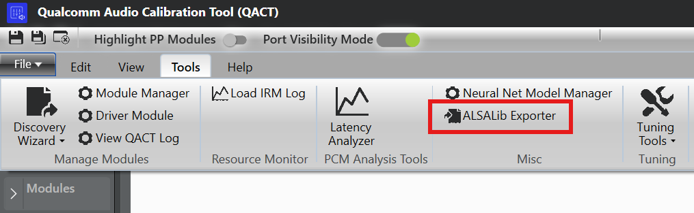
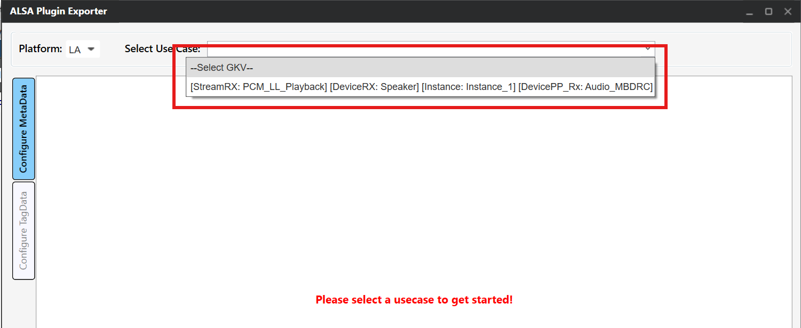
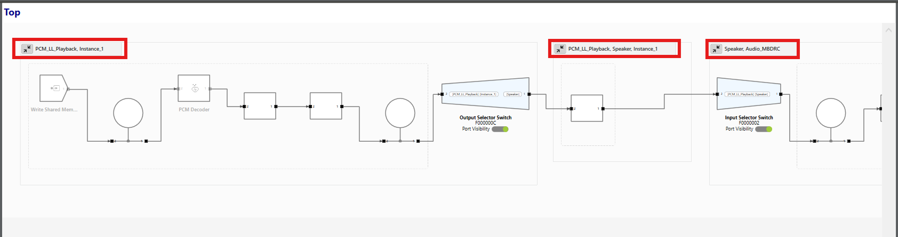
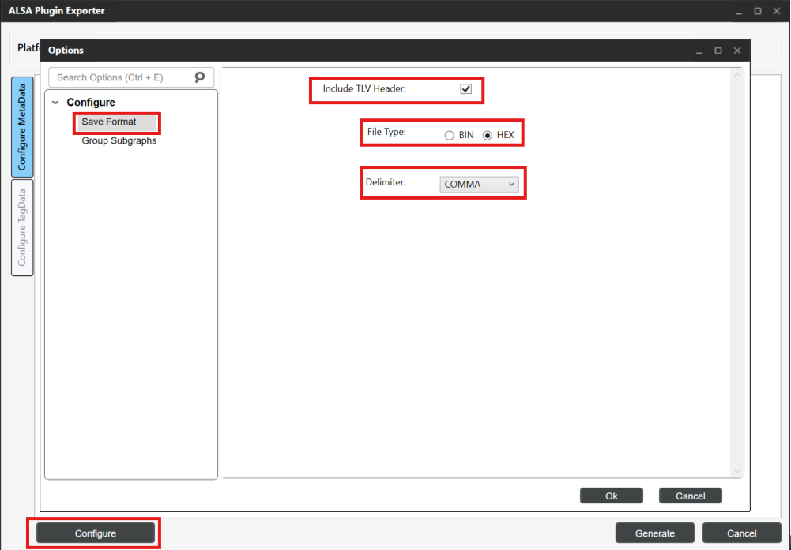
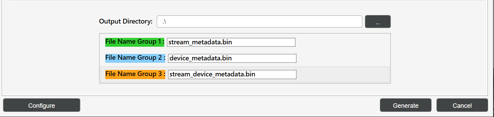

ALSA lib using AudioReach
This guide provides detailed information on integrating ALSA lib with AudioReach to realize audio use-cases. AudioReach provides a plugin-based architecture built around the AGM (Audio Graph Manager), a user-space service that manages the audio graph. ALSA lib integrates with AudioReach through the AGM plugin, which exposes a standard ALSA PCM and mixer interface to audio applications. The guide covers metadata generation using ARC (AudioReach Creator), ALSA plugin configuration, and examples for running audio use-cases using amixer and ALSA UCM.
ALSA lib Setup
This section covers the installation and verification of ALSA lib packages required for AudioReach integration. The ALSA lib packages provide the necessary libraries and utilities to interface with AudioReach’s plugin-based architecture.
Prerequisites
Before setting up for ALSA lib, verify that all AudioReach components are installed on your target platform. Refer to the relevant platform setup guide (for example, Raspberry Pi 4 for Raspberry Pi 4).
ALSA Package Installation
For Yocto-based builds, the ALSA lib packages should be included in the Yocto build. Open the file <yocto_build_root>/build/conf/local.conf and add the required packages:
IMAGE_INSTALL:append = " \
alsa-lib \
alsa-utils \
alsa-tools \
alsa-state \
"
Note
For non-Yocto environments (e.g., Buildroot, Debian-based distros), install the equivalent packages using the distribution’s package manager or build system.
Enabling ALSA lib Plugin in AudioReach Components
The ALSA lib plugin support is disabled by default in the AudioReach build system and must be explicitly enabled in two components: audioreach-graphmgr and audioreach-conf.
Project |
Flag |
Type |
Default |
|---|---|---|---|
|
|
|
|
|
|
|
|
Yocto Build
Add the following configuration to <yocto_build_root>/build/conf/local.conf to enable the flags.
EXTRA_OECONF:append:pn-audioreach-graphmgr = " --enable-alsalib"
EXTRA_OECONF:append:pn-audioreach-conf = " --with-libalsa"
Autotools Build
Pass the flags directly to the configure script for each component:
# audioreach-graphmgr
./configure --enable-alsalib
# audioreach-conf
./configure --with-libalsa
Verify ALSA Installation
Verify the ALSA installation using below commands:
# List available sound cards
aplay -l
# List available PCM devices
aplay -L
# Check ALSA version
aplay --version
Metadata Binary Files Generation using ARC
ARC is used to generate metadata binary files required for ALSA lib integration. These files define the audio graph topology and calibration data.
Required Metadata Files
The following metadata binary files are generated for ALSA lib integration:
- Stream Metadata
Defines audio stream properties such as sample rate, bit depth, and channel configuration.
- Device Metadata
Contains device-specific information including hardware capabilities and routing information.
- Stream-Device Metadata
Maps audio streams to specific devices and defines the connection topology.
Generate Metadata with ARC
Follow these steps to generate metadata files using ARC:
Step 1: Open ARC (QACT)
Launch QACT on a Windows machine
Load the ACDB workspace file from
/etc/acdbdata/(copied from target device)Note
The ACDB (Audio Calibration Database) workspace file contains the audio calibration and topology data for the target device. It is pre-installed on the target at
/etc/acdbdata/as part of the AudioReach platform setup.
Step 2: ALSA Plugin Exporter
In QACT, navigate to Tools → ALSA Plugin Exporter
{kind=link}

QACT Tools Menu - ALSA Plugin Exporter
Click on the “Configuration MetaData” tab
Step 3: Configure Use Case
Select the desired use-case from the dropdown (e.g., playback)
{kind=link}

Use Case Selection
Select the appropriate GKV (Graph Key Vector) for each subgraph corresponding to the use-case subgraphs. For example, if the first subgraph has keys set as PCM_LL_Playback, Instance_1 in use-case, then select the corresponding GKV [StreamRX:PCM_LL_Playback] and [Instance: Instance1] for the subgraph.
{kind=link}

Use Case Subgraphs and GKV Keys

Subgraph GKV Selection
Step 4: Configure Metadata
This step involves configuring the metadata format and grouping subgraphs for metadata generation.
4.1: Configure Metadata Format
Click the Configure button at the bottom left
Select “Include TLV header” option
Choose the appropriate file type based on your use-case:
For ALSA UCM configuration: Select File type as bin
For amixer configuration: Select File type as Hex with Delimiter as “COMMA”
{kind=link}

Configure Metadata Format
Note
The TLV (Type-Length-Value) header is required for ALSA lib to properly parse and transfer metadata. For UCM-based configurations, binary files with TLV headers are used with the cset-tlv API. For amixer-based configurations, hex format with comma delimiters allows inline metadata specification.
Generated Output
In both cases, ARC generates .bin files containing the metadata.
UCM (bin format): The
.binfile is used directly by ALSA UCM via thecset-tlvAPI. The binary content is transferred as-is to the AGM plugin.cset-tlv "iface=MIXER,name='PCM_RT_PROXY-RX-2 metadata' /etc/device_metadata.bin"
amixer (hex format): The
.binfile content is exported as a comma-delimited hex string. This hex payload is passed inline to the amixer command.amixer -D agm cset iface=MIXER,name='PCM_RT_PROXY-RX-2 metadata' 0x00,0x00,0x00,0x00,0x28,0x00,0x00,0x00,...
4.2: Configure Metadata Groups
Based on the use-case subgraphs, configure the metadata groups by selecting Group Subgraphs.
Group1 → Stream metadata
Group2 → Device metadata
Group3 → Stream Device metadata

Configure Group Subgraphs
Note
Configure Group Subgraphs based on the selected use-case. For use-cases without stream_device pre/post processing subgraph, only stream and device bins are generated.
Step 5: Generate Metadata Files
Update the bin file names for each group:
Group1:
stream_metadata.binGroup2:
device_metadata.binGroup3:
stream_device_metadata.bin
{kind=link}

Binary Group Naming
Add the output directory path and click “Generate” to create the metadata binary files.

Binary Output Directory Configuration
Step 6: Transfer Files to Target
Copy the generated metadata files to the Target device:
# Copy metadata files to Target device
scp stream_metadata.bin root@<target_device_ip_address>:/etc/
scp device_metadata.bin root@<target_device_ip_address>:/etc/
scp stream_device_metadata.bin root@<target_device_ip_address>:/etc/
Note
Metadata bin files are generated on a per-use-case basis. Each use-case has its own set of metadata files.
Running Audio Use Cases
This section demonstrates how to run audio use-cases using aplay using amixer and ALSA UCM configurations.
General Setup
Prerequisites
Ensure AudioReach services are running:
# Start AGM server
agm_server &
# Verify services are running
ps aux | grep agm
Required Files Setup
Copy the audio files:
# Copy audio file
scp <clip_name>.wav root@<target_device_ip_address>:/etc/
Using amixer
This section describes how to configure and run audio use-cases using amixer. The AGM plugin exposes mixer controls that allow setting PCM parameters, metadata, and device connections directly from the command line. Before running amixer commands, the AGM ALSA configuration file must be in place so that ALSA can route audio through the AGM plugin.
AGM ALSA Configuration File
The agm.conf file is the ALSA configuration file that defines the AGM plugin interface.
This file is shipped as part of the audioreach-conf package and is located at
/etc/alsa/conf.d/ on the target device. It enables ALSA applications to use the AGM
plugin for AudioReach integration.
Configuration Overview
The AGM configuration file defines:
Default PCM Device: Sets the system-wide default audio device to use AGM
Parameterized PCM Device: Allows applications to specify custom card and device numbers
Control Interface: Provides mixer control access for audio parameter configuration
Example agm.conf
pcm.!default {
type agm
card 100
device 100
}
pcm.agm {
@args [ CARD DEV ]
@args.CARD {
type integer
default 100
}
@args.DEV {
type integer
default 100
}
type agm
card $CARD
device $DEV
}
ctl.agm {
type agm
card 100
}
Before running the commands below, list the available mixer controls on the target to identify the correct control names for your configuration:
amixer -D agm controls
Example output:
numid=1,iface=MIXER,name='PCM100 metadata'
numid=2,iface=MIXER,name='PCM100 setParam'
numid=3,iface=MIXER,name='PCM100 setParamTag'
numid=4,iface=MIXER,name='PCM100 connect'
numid=5,iface=MIXER,name='PCM100 disconnect'
numid=6,iface=MIXER,name='PCM100 control'
numid=26,iface=MIXER,name='PCM_RT_PROXY-RX-2 rate ch fmt'
numid=27,iface=MIXER,name='PCM_RT_PROXY-RX-2 metadata'
...
- The PCM device names (e.g.,
PCM100,PCM_RT_PROXY-RX-2) and their associated controls vary by target configuration. Use the output of this command to substitute the correct names in the examples below.
With the default amixer, metadata payload must be specified directly in the command on
the same line as the mixer control. The payload must be in hex format with bytes delimited
by commas (e.g., 0x00,0x01,0x02,...).
# Set PCM parameters: rate=0xbb80 (48000 Hz), ch=0x2 (stereo), bit_width=0x2 (16-bit), fmt=0x1 (SNDRV_PCM_FORMAT_S16_LE)
amixer -D agm cset iface=MIXER,name='PCM_RT_PROXY-RX-2 rate ch fmt' 0xbb80,0x2,0x2,0x1
# Set PCM control
amixer -D agm cset iface=MIXER,name='PCM100 control' PCM_RT_PROXY-RX-2
# Set device metadata with payload (example payload)
amixer -D agm cset iface=MIXER,name='PCM_RT_PROXY-RX-2 metadata' <Device metadata payload in hex>
# Set stream metadata with payload (example payload)
amixer -D agm cset iface=MIXER,name='PCM100 metadata' <Stream metadata payload in hex>
# Set stream_device metadata with payload (example payload)
amixer -D agm cset iface=MIXER,name='PCM100 metadata' <stream_device metadata payload in hex>
# Connect PCM to device
amixer -D agm cset iface=MIXER,name='PCM100 connect' PCM_RT_PROXY-RX-2
Example: Setting device metadata with hex payload
amixer -D agm cset iface=MIXER,name='PCM_RT_PROXY-RX-2 metadata' 0x00,0x00,0x00,0x00,0x28,0x00,0x00,0x00,0x02,0x00,0x00,0x00,0x00,0x00,0x00,0xA2,0x01,0x00,0x00,0xA2,0x00,0x00,0x00,0xAC,0x02,0x00,0x00,0xAC,0x00,0x00,0x00,0x00,0x10,0x00,0x00,0x08,0x02,0x00,0x00,0x00,0x02,0x00,0x00,0x00,0x05,0x00,0x00,0x00
Run playback:
aplay -D agm:100,100 /etc/<clip_name>.wav
Using ALSA UCM
ALSA Use Case Manager (UCM) provides a higher-level interface for managing audio use-cases with AudioReach. UCM uses configuration files to define mixer control commands and automate use-case setup.
UCM Configuration Files
ALSA UCM discovers configuration by scanning the /usr/share/alsa/ucm2/ directory.
For physical sound cards it looks in a subdirectory named after the card; for virtual
cards it scans /usr/share/alsa/ucm2/conf.virt.d/. For AudioReach integration, the
AGM virtual sound card configuration is present on the target device in
conf.virt.d/ directory.
AGM virtual sound card configuration file
The AGM virtual sound card configuration file (agmvirtualsndcard.conf) is shipped as part of
the audioreach-conf package and is located at /usr/share/alsa/ucm2/conf.virt.d/ on the target
device. It defines the AGM virtual sound card and its associated use-cases, and serves as the entry
point for ALSA UCM to manage AudioReach-based audio routing.
Configuration file defines:
PCM Device Template: Reusable PCM device configuration with parameterized card and device numbers
Control Device: Mixer control interface for audio parameter management
Use Case Definitions: References to specific audio scenario configurations (e.g., PCMPlayback, VoiceCall)
Example agmvirtualsndcard.conf
Syntax 4
LibraryConfig.agm.Config {
pcm.agm {
@args [ CARD DEV ]
@args.CARD {
type integer
default 100
}
@args.DEV {
type integer
default 100
}
type agm
card $CARD
device $DEV
}
ctl.agm {
type agm
card 100
}
}
SectionUseCase."PCMPlayback" {
File "PCMPlayback.conf"
}
Use Case Configuration File
The PCMPlayback.conf file contains the mixer control commands for setting up playback.
ALSA UCM supports sending .bin files for metadata mixer controls using the cset-tlv API.
This file is located at /usr/share/alsa/ucm2/conf.virt.d/ on the target device
alongside agmvirtualsndcard.conf.
Example PCMPlayback.conf Structure
The PCMPlayback.conf file contain mixer control sequences similar to:
Syntax 2
SectionVerb {
EnableSequence [
cdev "agm"
cset "iface=MIXER,name='PCM_RT_PROXY-RX-2 rate ch fmt' 0xbb80,0x2,0x2,0x1"
cset "iface=MIXER,name='PCM100 control' PCM_RT_PROXY-RX-2"
cset-tlv "iface=MIXER,name='PCM_RT_PROXY-RX-2 metadata' /etc/device_metadata.bin"
cset-tlv "iface=MIXER,name='PCM100 metadata' /etc/stream_metadata.bin"
cset-tlv "iface=MIXER,name='PCM100 metadata' /etc/stream_device_metadata.bin"
cset "iface=MIXER,name='PCM100 connect' PCM_RT_PROXY-RX-2"
]
DisableSequence [
]
Value {
PlaybackPCM "agm:100,100"
}
}
SectionDevice."Speaker" {
EnableSequence [
]
DisableSequence [
]
Value {
PlaybackChannels "2"
}
}
Running use-case with UCM
Set-up Use Case
Use alsaucm to configure the audio use-case:
# Set up playback use-case using alsaucm
alsaucm -n -b - <<EOM
open agmvirtualsndcard
set _verb PCMPlayback
EOM
Where:
agmvirtualsndcardis the virtual sound card configuration file namePCMPlaybackis the use-case Verb in the ALSA UCM, defined in the agmvirtualsndcard.conf
Run Playback with UCM
After setting up the use-case, run playback:
# Play audio file
aplay -D agm:100,100 /etc/<clip_name>.wav
References
AudioReach
ALSA UCM
amixer